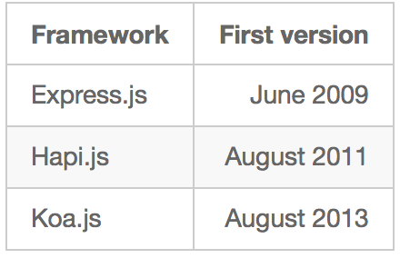
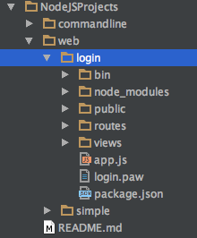
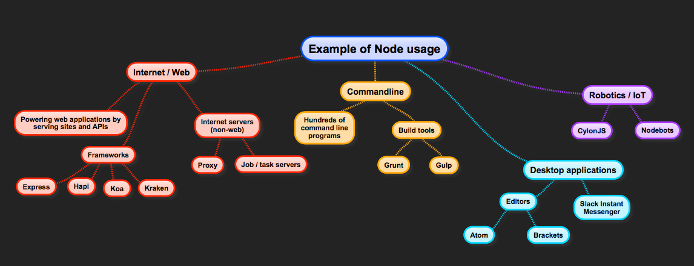
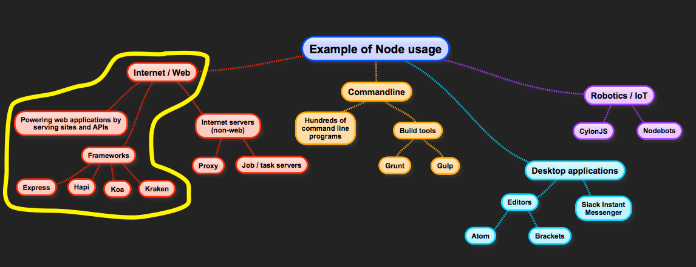

About me
Carlos Justiniano, HC.JS founder and a long-time programmer
A fullstack developer using NodeJS since 2011
Developed Node applications in production use
Developer at MediaMath, note: we're hiring!
Node = NodeJS
---
In this presentation I'll refer to NodeJS simply as Node.
This is part two
Part one is here: http://cjus.github.io/nodejs-presentation
---
In our last presentation we looked at NodeJS as a JavaScript execution engine and platform for building everything
from command line tools and desktop applications - to full-blown web applications.
In addition we looked at installing Node and adding packages such as the Express web application framework.
If you missed that talk you can find it here… http://cjus.github.io/nodejs-presentation
Quick recap
Node is an application which contains a JavaScript execution engine
Specifically, that engine is Google's Chrome V8 engine
However, Node is also much more
---
Let’s do a quick recap before diving into more advanced Node topics.
So we discussed node as a JavaScript execution engine because node is an application - which contains an embedded
JavaScript interpreter for running JavaScript programs.
Node is actually much more, but this simple definition serves as a foundation for learning more about Node.
Node as a JS execution engine
Start node at the terminal
Node then enters a mode called a REPL (Read Eval Print Loop)
Type JS and watch it execute
Tip: Press the TAB key to view a list of internal commands
Press CTRL-C twice to exit
---
Let’s see how Node works as a JavaScript execution engine.
Here’s a quick demo. Let’s start Node at the terminal prompt. We won’t go into installing node, that’s covered in
the last presentation.
$ node
That starts the Node and enters an interactive mode known as a REPL which is an acronym for Read Eval(uate) Print
Loop. We can enter JavaScript in this console and see the results.
Tip: Press the TAB key to view a list of internal commands
To exit simply press CTRL-C twice.
Node as a tool to build command line programs
Code sample here: https://github.com/cjus/nodejs-presentation-advanced/tree/master/NodeJSProjects/commandline
---
Node can also be used to build programs that execute on the command line.
Here’s our example of a command line program which displays system information.
Node as a web server
Code sample here: https://github.com/cjus/nodejs-presentation-advanced/tree/master/NodeJSProjects/web/login
---
We also saw how Node can be used to serve web pages and even act as an API server as part of a larger web
applications.
Here’s that demo.
Node as an API server
---
In the last demo Node is functioning as both a web server and an API server. To demonstrate this, let’s login using
a desktop client called PAW. PAW is a mac only tool for testing APIs that is popular among API developers.
Using PAW we can see how our API request is constructed and what Node returns in response.
We can also see this on the command line as the calls happen.
We’ll get back to this example a bit later, for now let’s take a slight detour and learn about web frameworks for
Node.
Node web frameworks
The last demo used a web framework, an add-on which consists of code that simplifies the creation of web
applications
There are lots of frameworks to choose from: ExpressJS, HapiJS, Koa and KrakenJS to name a few.
These frameworks differ in how they're configured, create servers, handle routing and middleware
---
The last demo shows Node as an API server. To accomplish we made use of a node package called a web framework.
A web framework consist of code which simplifies the creation of web applications. In this regard, there are a
number of frameworks available for Node. Which framework you should use depends on your projects needs.
The most popular are Express.js, Hapi.js and Koa.js, KrakenJS
These frameworks differ in how they create servers, handle routing and middleware. These are topics we haven’t
addressed in this presentation but you can learn more about them online.
Framework popularity
The following data is from an article entitled
https://www.airpair.com/node.js/posts/nodejs-framework-comparison-express-koa-hapi
---
The following data is from an article entitled "Node.js Framework Comparison: Express vs. Koa vs. Hapi"
https://www.airpair.com/node.js/posts/nodejs-framework-comparison-express-koa-hapi
Framework popularity
---
The data shows that the Express.js framework is by far the most popular based on a number of important metrics.
| Metric | Express.js | Koa.js | Hapi.js
| —————— | ——————: | ——: | ——:
| Github Stars | 16,158 | 4,846 | 3,283
| Contributors | 163 | 49 | 95
| Packages that depend on: | 3,828 | 99 | 102
| StackOverflow Questions | 11,419 | 72 | 82
Available books
---
Another important metric is how many books and online tutorials you can find while trying to learn a framework.
I did a quick search on Google Shopping for books on Express, Koa and Hapi:
|Framework | Query | Hits
|—————— | :——: ——:
| Express.js | “express.js” +book | dozens
| Hapi.js | “hapi.js” +book | 1
| Koa.js | “koa.js” +book | 0
| Kraken.js | “kraken.js” +book | 0
Framework age

---
That said, Express.js is also the oldest Node framework. So it’s conceivable that another framework may someday
exceed it in popularity among developers.
For now at least, Express would be a reasonable place to start.
| Framework | First version
|—————— | ——:
| Express.js | June 2009
| Hapi.js | August 2011
| Koa.js | August 2013
In our earlier talk we looked at the ExpressJS framework for Node. That’s the framework behind our prior demo.
Code review of a Node / Express app
Code can be found in this presentation's repo on GitHub: https://github.com/cjus/nodejs-presentation-advanced
Look inside of the NodeJSProjects/web/login folder

---
Let’s revisit our login sample application. We’ll take a closer look at how the application is constructed. Our
example uses the Express framework, but keep in mind that what you’ll see is comparable to what you’ll find in other
frameworks.
The source for our application can be found this presentation’s repo on GitHub:
https://github.com/cjus/nodejs-presentation-advanced
You’ll find the login application in the NodeJSProjects/web/login folder.
Our application’s JavaScript can be found in the project’s root, app.js and in the routes and bin folder. The
node_modules folder is where our package dependencies are stored. We’ll learn more about node packages shortly. The
views folder contains web templates which are not really used in this project.
The routes folder contains handlers for the URLs our application handles. More about that shortly.
The public folder holds are website files, which Node will statically serve when users access our site.
Let’s see how this all comes together.
Application Routes
Site loads from: http://localhost:3000
Site calls http://localhost:3000/api/v1/login from the login page
---
At a high level when the user visits our site, in our case at http://localhost:3000, our Express based app will
handle that URL and respond by sending back the sites index.html from the public folder. That will then trigger the
user’s web browser to make requests for the associated javascript and CSS files.
Once our site loads in the user’s browser they’re able to login to our application by sending their user name and
password. That is essentially a jQuery AJAX call to http://localhost:3000/api/v1/login
So in this basic example, our application is both serving a website and responding to an API request.
Note the format of our API URL. It contains a path to ‘api’ followed by a ‘v1’ segment and a ‘login’ segment. This
structuring allows us to differentiate API requests from other requests, such as loading the site’s CSS.
Additionally the v1 portion allows us to support multiple API versions. The last portion is the login which is the
name of the individual API. We might, for example, have a logout API.
---
Let’s look at some code.
The first thing we do to wire up our login handler is to add a route entry to our app.js file. Here we’re just
saying that when express see’s a request for /api/v1/login it should send that request to our login.js handler.
The separates a login path from the code which actually handles it.
At the very top of our login.js handler we see a warning about this code fragment not being secure. Don’t do this at
work!
We create an express object which uses the requires function to load the express module. We then create a router
object from express.Router.
We’ll look at node modules a bit later in this presentation.
So we essentially provide an anonymous function as our route handler. Note the function signature contains three
parameters: req, res, next. The request object allows us to see the contents of a request. This allows us to examine
HTTP headers and review body responses such as a JSON object that might have been sent from our website. The
response object allows us to package up a response which will then get sent back to the user’s web browser or
calling client, such as PAW.
The last parameter, next, is used to chain request processing - but we won’t go into that in this presentation.
---
In public/javascripts/app.js we see our API request which will get sent to api/v1/login. This uses the $.post jQuery
method to send a JSON object to our server.
Note who the request object has handlers for done and fail. Because our response won’t be handled immediately we
have to create callback handler for use when a response arrives. This pattern is known as promises and it’s
something you should be using in your own applications. In this case we’re using jQuery promises and you can learn
more about them online.
Another point worth noting is that our request is to ‘api/v1/login’ because the API handling is on the same server
as the one where the website is being served from. You could make requests to other servers by using something like
‘http://someserver.com/api/v1/login'. This also allows you to have one node server to serve web content and another
to process API requests. This core concept will later lead us to micro services the new web hotness.
So in addition to handling requests, Node applications can also make requests in the same manner listed in this
example. This allows Node applications to communicate with one another and to become larger than the sum of their
parts.
Using modules in our app
npm install module_name
for example: npm install express
Then require('module_name') in our app
---
In the last example we saw how our login handler requested the express module and called the Router constructor to
create a new route.
That allows us to build on an existing express component. In a similar fashion you might need to create an Excel
spreadsheet or access a remote database. Node handles this by allowing you to load modules which address your
particular need.
In the first presentation we saw how we could add a module, such as express.
Then we can require the module for use in our app.
NPM - The Node Package Manager
The Node Package Manager is a tool which ships with Node and assist with the searching, packaging, publishing
and updating of node modules
---
Modules offer a huge boon to developers building Node-based applications. By building modules you’re able to package
reusable functionality to share across projects within your company or with the global open source community at
large. And better yet you can locate modules which perhaps address your project's specific concerns.
The Node Package Manager is a tool which ships with Node and assist with the searching, packaging, publishing and
updating of node modules.
Because every package module you add to your project becomes a dependency of your project, NPM is often considered a
dependency manager, however it's much more.
We saw an npm example when we install ExpressJS:
```
$ npm install express
```
If you look under the hood you’ll find that the NPM tool is in-fact a JavaScript file which runs at the command line
using Node.
In this example snap shot from my machine we see that npm is just a symlink to the npm-cli.js program.
```
lrwxr-xr-x 1 root admin 38B Jul 21 23:45 npm -> ../lib/node_modules/npm/bin/npm-cli.js
```
The NPM repository
npmjs.org contains a massive repository of node packages
Over 178,000 packages exist!
There are no shortage of packages and likely dozens to fit your apps specific needs
---
Visit npmjs.org and you'll find a massive repository of node packages. When I last visited the site, while writing
this presentation, I found that on that day over 178,000 total packages existed with over 111 million downloads in
the last day alone! npm has become the largest source package repository ever created. It has far surpassed other
leading repositories such as RubyGems and CSPAN.
For an interactive presentation see: https://unpm.nodesource.com/
The npmjs.org site allows you to search for packages, so the problem isn't searching - it's finding which of many
packages to use to address your app's concern. Let's just say that there is not shortage of packages!
Building and publishing an NPM package
You too can contribute Node modules!
Let's see how
---
Part of the reason that there are so many Node packages is because anyone can contribute a package. You won't find
an acceptance committee such as those who police mobile app stores. In fact, you too can contribute node modules!
We'll see how to do that next.
About a year ago I contributed two open source packages to the NPM repository.
Let me step through the process with you.
* The I configured NPM for publishing
$ npm set init.author.name "Carlos Justiniano"
$ npm set init.author.email "carlos.justiniano@gmail.com"
$ npm set init.author.url "http://cjus.me"
$ npm adduser
The last command wrote my credentials to the ~/.npmrc file, where it will be available to subsequent npm commands.
* Next I created my project on github.
* Then I update my projects package.json file to include information which NPM publish would need. Important fields
include "name", "contributors", "repository", "keywords" and "license"
* The npm publish command reads the package.json to determine how to configure and publish your project in the npm
repository.
* To publish we just use: npm publish
For complete step by step tutorial see: https://quickleft.com/blog/creating-and-publishing-a-node-js-module/
NVM - The Node Version Manager
NVM allows you to install and switch between different versions of Node
This is useful for trying new features and testing existing code
---
Node is updated periodically in response to enhancements and new features. It's a good idea to keep up with updates
by trying your programs against newer version of Node. This can, however, become problematic if you only have one
version of node installed on your machine at one time.
To address this issue there is the Node Version Manager, a tool which allows you to install and switch between
multiple versions of Node.
Installing a new version of node is as simple as:
$ nvm install 0.12.7
And switching beween version is:
$ nvm use 0.10.25
to find out more about NVM visit: https://github.com/creationix/nvm
Uses of Node

---
Node is being used to address many types of concerns.
When people first learn about node they see it as a backend server technology, primarily used to build web facing
applications.
Uses of Node

---
Later they learn that Node is also used to power the build tools they use to package their web applications. Tools
like Grunt and Gulp.
Along the way we learn that node can be used to build command line tools. This is quickly becoming an alternative to
shell / batch scripting.
What many developers don’t realize is that Node is used to build desktop applications and power Robotics and the
Internet of Things.
You’ll find Node in use from tiny devices (see Node on Raspberry Pi) to large scale clusters running on cloud
infrastructure.
For JavaScript developers this is awesome. You get to take your JS and Node experience and apply it to an increasing
field of opportunities. The same can’t be said for many other options.
Node and Robotics
Checkout CylonJS and NodeBots!
---
Oh, and did I mention you can build robots using Node?
Checkout CylonJS and NodeBots!
Node internals
---
Node consist of two main parts. One part is concerned with handling requests in a single threaded loop. This is
known as the event loop. This is also where the V8 JavaScript engine is used.
Node takes I/O tasks and creates threads to handle them. This means that those threads are able to run efficiently
on multi-processor and multi-core machines. In fact you can scale the single event loop process by running multiple
version of node on a single machine. This is handled using Node clustering.
You can think of Node’s Event loop as a staging area for I/O tasks.
So why is this effective? Because a majority of time in web applications is spent waiting for file and network
communication to take place. By not waiting for those requests to complete, Node can focus on handling more requests
and running the rest of your code.
Node Add-ons: Extending Node, using C++
Modules written as native C/C++ components call shareable objects
Extends Node and JavaScript by allowing progams to call into the native module
Let's see an actual example. Code available here: NodeJSProjects/node-addon
---
Node can be extended using C/C++ native modules. There are a variety of reasons for wanting to do this, but a common
one has to do we getting absolute performance. Another reason is to hook into lower level Node functionality which
might not be accessible from JavaScript. At least one reason to avoid doing this is that addons have to be compiled
for each platform they're expected to run on. So you lose the portability inherit in most JavaScript node
applications.
Node itself is written in the C++ programming language. As such, it can be extended using C and/or C++. Node add-ons
are packaged as dynamically loadable modules which is common in the *nix camp and similar to DLLs on the Microsoft
Windows platform. The basic idea is that a module can exists outside of the main program as a component that can be
loaded at runtime. This is an important approach because otherwise you'd have to obtain the NodeJS source code and
extend it prior to rebuilding your own custom version. This is of course a bad idea on so many levels. But hey, this
is open source - so you could do that if you really wanted too.
Ok, let’s see an example!
To do this I’ll need to log onto my Linux box on Amazon.
Preparing our build environment
$ npm install nan@latest --save
$ sudo npm install node-gyp -g
---
For this demo we need to install NAN, which allows us to which makes it easier to work with C++, Node and the V8
API. It also allows us to more easily target multiple versions of Node
$ npm install nan@latest --save
Next we need to make sure that Node-gyp is installed globally. Node-gyp is a Node.js native addon build tool.
$ sudo npm install node-gyp -g
Building our project
$ node-gyp configure
$ node-gyp build
var addon = require('./build/Release/hello.node');
console.log(addon.hello());
---
Each Node addon consist of at least three files:
* binding.gyp - binding information for our source files
* One or more C/C++ files which actually make the code of our addon
* A package.json file which describes our project and its dependencies
We use node-gyp to configure our project
$ clear
$ node-gyp configure
Now we can actually build our project
$ node-gyp build
The output of the last two operations is the creation of a hello.node module in the ~/node-addon/build/Release
folder. This file is actually a Dynamic Shared Object which usally end in a .so extension. Here, node-gyp names our
addon with a .node extension because Node looks for such files when a module is required.
We can now use the new node addon in our JS projects:
var addon = require('./build/Release/hello.node');
console.log(addon.hello());
For more information about this demo checkout:
https://github.com/nodejs/node-addon-examples/tree/master/1_hello_world
### Useful links for understanding and building Node add-ons
So much of this is outside the scope of this talk, but if you're interested in learning more see these great
articles:
* https://nodejs.org/api/addons.html
* https://www.npmjs.com/package/node-gyp
* https://www.youtube.com/watch?v=q1ri36UI5GA
Microservices and Node
Micro Services is "An approach to developing a single application as a suite of small services". - Martin Fowler
Node has emerged as an ideal way of building Micro Services. Coupled with a framework such as Express and the vastness that is NPM, Node-based microservices can be quickly built and tested.
---
Micro Services is "An approach to developing a single application as a suite of small services". - Martin Fowler
There a number of reason for doing this:
* Bodies of code serve specific functionality, such as email, order processing or image processing.
* Code is easier to maintain for each service.
* Each service can be build using the technologies that given team feels comfortable with.
* Large applications can scale based on the load of individual services.
Node has emerged as an ideal way of building Micro Services. Coupled with a framework such as Express and the
vastness that is NPM, Node-based microservices can be quickly built and tested.
Good links on Microservices:
* https://www.youtube.com/watch?v=2yko4TbC8cI
* https://www.youtube.com/watch?v=wgdBVIX9ifA
* https://www.youtube.com/watch?v=nMTaS07i3jk
* https://www.youtube.com/watch?v=X0_d0ci8UcY
* http://exponential.io/blog/nodeday-2014-you-only-need-100-lines-of-javascript/
William Blankenship's talk next month on "Rapidly developing microservices using Node.JS and Docker" will cover this
topic in greater depth.
Good links on Microservices:
https://www.youtube.com/watch?v=2yko4TbC8cI
https://www.youtube.com/watch?v=wgdBVIX9ifA
https://www.youtube.com/watch?v=nMTaS07i3jk
https://www.youtube.com/watch?v=X0_d0ci8UcY
http://exponential.io/blog/nodeday-2014-you-only-need-100-lines-of-javascript/
---
Good links on Microservices:
* https://www.youtube.com/watch?v=2yko4TbC8cI
* https://www.youtube.com/watch?v=wgdBVIX9ifA
* https://www.youtube.com/watch?v=nMTaS07i3jk
* https://www.youtube.com/watch?v=X0_d0ci8UcY
* http://exponential.io/blog/nodeday-2014-you-only-need-100-lines-of-javascript/
William Blankenship's talk next month on "Rapidly developing microservices using Node.JS and Docker" will cover this
topic in greater depth.
Don't miss next month's talk:
Rapidly developing microservices using Node.JS and Docker
---
William Blankenship's talk next month on "Rapidly developing microservices using Node.JS and Docker" will cover this
topic in greater depth.
Contact
cjus on Twitter and Github
Email: cjus34@gmail.com
About: http://cjus.me